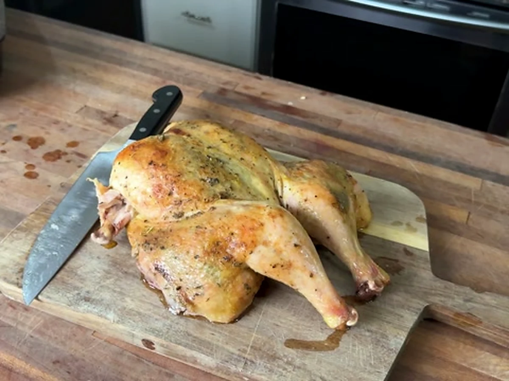

Whole Chicken Dinnerfor a Full Table
Crispy herb-butter chicken, jasmine rice, and garlicky spinach—the complete family dinner from Jadon’s cook-along.

Watch the recipe
Cook it with Jadon.
Play the video here, then keep the measured ingredient list and full method open beside you while you cook.
Open on YouTube ↗Cook in this order
Method
- Heat the oven to 425°F. Put each chicken breast-side down. Cut along both sides of the backbone with kitchen shears, remove it, flip the chicken, and press firmly on the breastbone until the chicken lies flat.
- Pat both chickens completely dry. Mix the softened butter with 2 tablespoons olive oil, 2 teaspoons salt, 1 teaspoon pepper, paprika, garlic powder, and Italian seasoning.
- Gently loosen the skin over the breasts and thighs. Rub half of the seasoned butter under the skin and the rest over the outside of both chickens.
- Set the chickens flat in a foil-lined roasting pan. Roast for 45–60 minutes, until the thickest part of the breast and thigh reaches 165°F. Rest 20 minutes before carving.
- While the chicken roasts, rinse the jasmine rice until the water is nearly clear. Cook it in a rice cooker with the amount of water required by your cooker.
- Warm 1 tablespoon olive oil over medium heat. Cook the garlic until fragrant and lightly golden. Add the spinach and turn it until wilted. Finish with apple cider vinegar, the remaining salt, and the remaining pepper.
- Carve the rested chicken. Serve it over jasmine rice with spinach and spoon the buttery pan juices over the chicken and rice.
Food-safety checkChicken is ready when the thickest breast and thigh both register 165°F on an instant-read thermometer. Do not rely on color or timing alone.
Ready for the next one?
Browse every Jadon Cooks recipe and watch the matching video.
See all recipes